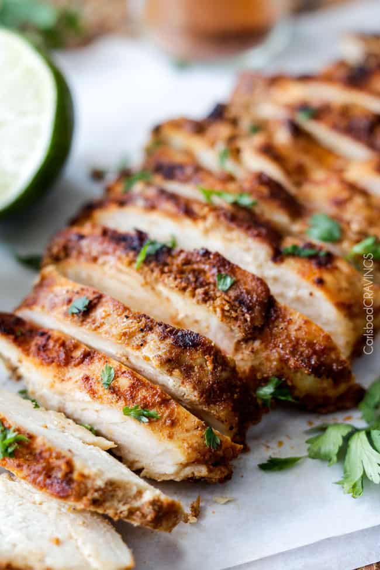

Chipotle Chicken Recipe

DESCRIPTION
Skip the restaurant and make your own copycat Chipotle Chicken recipe at home. The marinade is quick, easy, healthy, and tastes even better than the real thing!
For ingredients, you'll need:
- 6oz chicken breast or chicken thighs
- 1 can of chipotles in adobo sauce
- 1/4 tablespoon minced garlic
- 3/4 teaspoon of salt
- 3/4 teaspoon cayenne pepper
INSTRUCTIONS
- Season the chicken with salt and pepper on both sides. Combine the garlic and chipotle in adobo sauce in a bowl. Rub the spice mixture evenly over the chicken and let them sit for a 5 minutes.
- Preheat your grill or grill pan to medium-high heat. Grease the grill grates with oil and cook on each side for six to eight minutes.
- Use a thermometer to check the internal temperature of the chicken is at or above 165 degrees Fahrenheit. Once this temperature is reached, remove chicken from heat.
- Once cooked, transfer the meat to a plate and let it rest for a few minutes before slicing. This step prevents the juices from running out of the chicken.